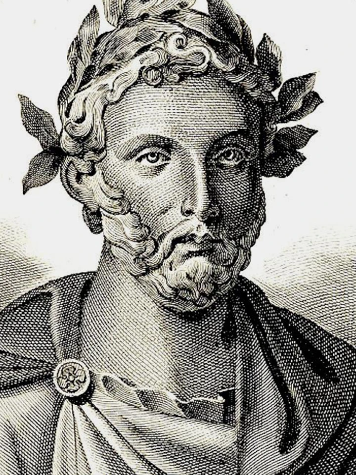

Titus Maccius Plautus
255 – 184 př. n. l.

- neurozený původ, údajně propuštěnec
- římský dramatik
- navázal na novou řeckou komedii
- autor komedií (130 her, dochovalo se 21)
- důvěrně znal humor nižších vrstev
- vytvářel komické charaktery (lakomce, lehké ženy, prohnaného otroka…)
- jeho dílem se inspiroval Moliere v období klasicismus (v komedii Lakomec)
Komedie o hrnci
Stařec Euclio skryl hrnec plný zlata, protože se bál, že mu jej někdo ukradne. Hrnec nakonec opravdu zmizí. Peníze použije zamilovaný mladík, aby s pomocí svého otroka dosáhl sňatku se svou vyvolenou, Euclionovou dcerou.